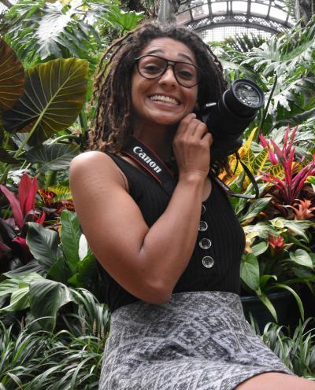
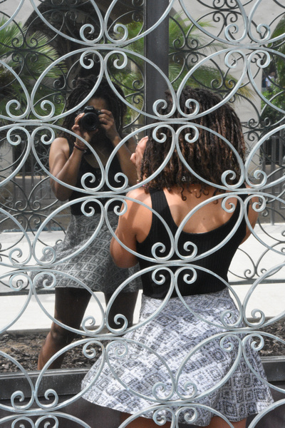

Growing up around the world, I have always been well accustomed to cultural diversity and rapid change. When I was
introduced to the tech community, I saw not only an opportunity to contribute to some
of the world's leading innovations, I also saw a clear path to creative and geographical freedom.
I'm a fullstack web developer on an everlasting learning journey, who's excited to join a team of other talented programmers.
Next to coding, I am also an enthusiastic photographer and music junkie. I can be found at my local concert venue, inches from
the stage, firing away on my Canon 77D. Or hiking the trails of a State park, or natural reserve, camera-ready.
